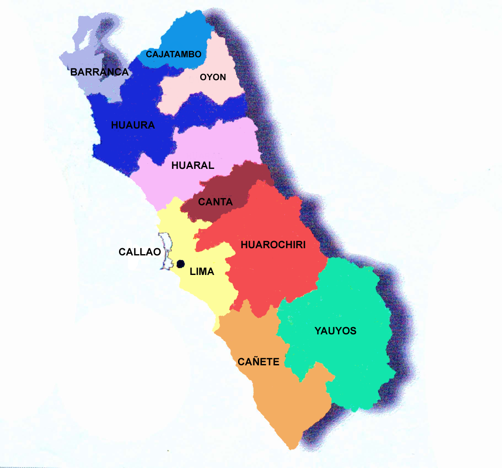

HISTORIA
Lima fue fundada el 18 de enero de 1535 por el conquistador Francisco Pizarro. Estuvo considerada, durante casi tres siglos, como la Capital Virreinal de América del Sur. En 1821, pasó a ser capital del Perú independiente; durante los primeros decenios de vida republicana fue escenario de enfrentamientos políticos entre distintos caudillos. Con el advenimiento del siglo XX, Lima se modernizó y creció, intentando ponerse a tono con las grandes capitales del mundo. En el 2002 el departamento de Lima se dividió en Región Lima y Lima Metropolitana, la capital del Perú. Sin embargo, si nos remontamos a los 10 000 años A.C., Lima ya había sido ocupada por grupos de cazadores y nómades que recorrían los valles y costas del río Rímac en busca de animales, mariscos y peces con los cuales alimentarse. Hacia el siglo II D.C. la cultura Lima adquirió gran fuerza en la zona.
ESCUDO

GOBERNADOR REGIONAL
Ricardo Chavarría Oria

MAPA DEL DEPARTAMENTO

PROVINCIAS Y DISTRITOS DE LIMA
- HUAROCHIRI
ANTIOQUIA
CALLAHUANCA
CARAMPOMA
CHICLA
CUENCA
HUACHUPAMPA
HUANZA
HUAROCHIRI
LAHUAYTAMBO
LANGA
LARAOS
MARIATANA
MATUCANA
RICARDO PALMA
SAN ANDRES DE TUPICOCHA
SAN ANTONIO
SAN BARTOLOME
SAN DAMIAN
SAN JUAN DE IRIS
SAN JUAN DE TANTARANCHE
SAN LORENZO DE QUINTI
SAN MATEO
SAN MATEO DE OTAO
SAN PEDRO DE CASTA
SAN PEDRO DE HUANCAYRE
SANGALLAYA
SANTA CRUZ DE COCACHACRA
SANTA EULALIA
SANTIAGO DE ANCHUCAYA
SANTIAGO DE TUNA
SANTO DOMINGO DE LOS OLLEROS
SURCO
- CANTA
ARAHUAY
CANTA
HUAMANTANGA
HUAROS
LACHAQUI
SAN BUENAVENTURA
SANTA ROSA DE QUIVES
- HUARAL
ATAVILLOS ALTO
AUCALLAMA
CHANCAY
HUARAL
IHUARI
LAMPIAN
PACARAOS
SAN MIGUEL DE ACOS
SANTA CRUZ DE ANDAMARCA
SUMBILCA
VEINTISIETE DE NOVIEMBRE
- YAUYOS
ALIS
AYAUCA
AYAVIRI
AZANGARO
CACRA
CARANIA
CATAHUASI
CHOCOS
COLONIA
HONGOS
HUAMPARA
HUANCAYA
HUANGASCAR
HUANTAN
HUAÑEC
LARAOS
LINCHA
MADEAN
MIRAFLORES
COMAS
PUTINZA
QUINCHEZ
QUINOCAY
SAN PEDRO DE PILAS
TANTA
TAURIPAMPA
TOMAS
TUPE
VIÑAC
VITIS
YAUYOS
- CAÑETE
ASIA
CALANGO
CERRO AZUL
CHILCA
COAYLLO
IMPERIAL
LUNAHUANA
MALA
NUEVO IMPERIAL
PACARAN
QUILMANA
SAN ANTONIO
SAN LUIS
SAN VICENTE DE CAÑETE
SANTA CRUZ DE FLORES
ZUÑIGA
- BARRANCA
BARRANCA
PARAMONGA
PATIVILCA
SUPE
SUPE PUERTO
- CAJATAMBO
CAJATAMBO
COPA
GORGOR
HUANCAPON
MANAS
- OYON
ANDAJES
CAUJUL
COCHAMARCA
NAVAN
OYON
PACHANGARA
- LIMA
ANCON
ATE
BARRANCO
BREÑA
CARABAYLLO
CHACLACAYO
CHORRILLOS
CIENEGUILLA
COMAS
EL AGUSTINO
INDEPENDENCIA
JESUS MARIA
LA MOLINA
LA VICTORIA
LIMA
LINCE
LOS OLIVOS
LURIGANCHO
LURIN
MAGDALENA DEL MAR
MIRAFLORES
PACHACAMAC
PUCUSANA
PUEBLO LIBRE
PUENTE PIEDRA
PUNTA HERMOSA
PUNTA NEGRA
RIMAC (SOLO URB. PIEDRA LIZA)
RIMAC (EXCEPTO URB. PIED. LIZA)
SAN BARTOLO
SAN BORJA
SAN ISIDRO
SAN JUAN DE LURIGANCHO
SAN JUAN DE MIRAFLORES
SAN LUIS
SAN MARTIN DE PORRES
SAN MIGUEL
SANTA ANITA
SANTA ROSA
SANTIAGO DE SURCO
SURQUILLO
VILLA EL SALVADOR
VILLA MARIA DEL TRIUNFO
- HUAURA
AMBAR
CALETA DE CARQUIN
CHECRAS
HUACHO
HUALMAY
HUAURA
LEONCIO PRADO
PACCHO
SANTA LEONOR
SANTA MARIA
SAYAN
VEGUETA
PAGINAS IMPORTANTES
1) Pagina Oficial de la municipalidad
2) Pagina de viajes del Perú
3) Ministerio del Interior
- HUAROCHIRI
- CANTA
- HUARAL
- YAUYOS
- CAÑETE
- BARRANCA
- CAJATAMBO
- OYON
- LIMA
- HUAURA